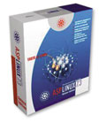
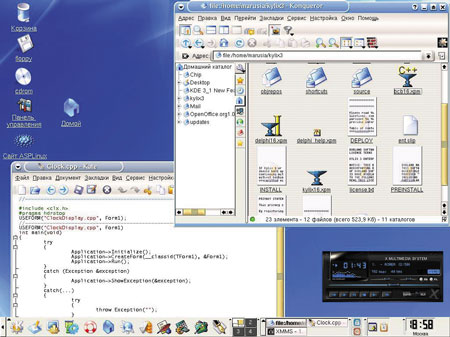

Мария Сысойкина
maria@inion.ru
Linux... С уверенностью могу сказать, что большинство людей, незнакомых с этой операционной системой, впадают в легкое замешательство, услышав ее название и уж тем более получив предложение использовать эту систему в повседневной работе. Рискну предположить, что многие из непосвященных сразу же представляют себе черный экран терминала, работу с командной строкой и необходимость постоянного программирования. Более осведомленные вспомнят что-то о больших сетевых возможностях системы, припомнят почтовые серверы.
На самом деле Linux - это намного больше. Прежде всего это свободно распространяемая, реально многозадачная и многопользовательская операционная система. Свободно распространяемая означает, что, каким бы путем вы ни приобрели систему - купили, взяли у знакомого или загрузили дистрибутив из Сети, - в любом случае использование Linux будет совершенно законным. Можно купить дистрибутив у компании-разработчика, но фактически вы при этом заплатите только за квалифицированную поддержку продукта. Кроме того, приобретая тем или иным путем дистрибутив Linux, вы получаете его исходные коды, а также все права на их изменение, доработку и дальнейшее распространение. Такая свобода связана с тем, что Linux разрабатывается и распространяется по лицензии GNU GPL. GNU - это альтернативный UNIX проект, начатый в 1984 году Ричардом Столлманом. GNU расшифровывается как GNU is Not Unix (это так называемый рекурсивный акроним, где первая буква обозначает саму аббревиатуру). Одной из главных целей этого проекта было упорядочить ситуацию с доступностью открытого кода системы и правами на него. В какой-то момент различные версии очень популярной в 80-е гг. системы UNIX стали конкурировать между собой. Ряд версий контролировался компанией AT&T, а целая ветвь UNIX создавалась на основе кода BSD (Berkley Software Distribution) в Университете Беркли. На базе этого кода возник проект 386BSD, прародитель NetBSD, OpenBSD и FreeBSD. Но код BSD базировался на разработках AT&T, и потому разгорелось судебное разбирательство. В итоге родился проект GNU и в его рамках лицензия на бесплатное распространение ПО - GPL (General Public License - универсальная общедоступная лицензия).
Среди вариантов UNIX была небольшая ОС Minix - учебная система, предназначенная для обучения основам UNIX. Автором ее был профессор из Амстердама Энди Таненбаум. В 1991 г. студент Университета Хельсинки Линус Торвальдс решил переписать Minix, начав с переработки программы эмуляции терминала, которая его совершенно не устраивала. Да и сама Minix, даже будучи в первую очередь обучающей системой, не была бесплатной. Следом за терминалом были реализованы некоторые системные вызовы, соответствующие стандартам POSIX. В общем, в 1991 г. на свет появилось ядро Linux, на тот момент работавшее только на архитектуре 386-х процессоров, но уже тогда с многозадачной средой, оболочкой bash и компилятором gcc. Одну из стабильных версий системы Линус Торвальдс выложил в Интернет с предложением пользователям Minix высказывать свои идеи и пожелания по поводу дальнейшего развития Linux.
Идея новой бесплатной ОС была с энтузиазмом воспринята многими хакерами, проект стал набирать обороты и в конце концов вылился в настоящую вполне конкурентоспособную операционную систему, разрабатываемую целым сообществом программистов по всему миру. Будучи сторонником открытого ПО, Линус Торвальдс не сохранил за собой авторские права на ОС, а остановился на идее лицензирования GPL. Таким образом, согласно пунктам лицензии, Linux не только бесплатно распространяется, но и исходные коды ее доступны, причем их можно изменять либо использовать для других проектов, но в этом случае новые проекты также будут открытыми. Кроме того, человек, получивший исходные тексты, обладает на них теми же правами, что и человек, их предоставивший, т. е. он может их изменять, использовать, передавать кому угодно и т. д.
Такое положение вещей позволило Linux в довольно короткие сроки завоевать интерес огромного количества разработчиков по всему свету, что, в свою очередь, привело к достаточно быстрому развитию ОС. Кроме того, открытость системы позволяет ей достаточно динамично развиваться и сейчас: свежие версии ядра системы появляются приблизительно раз в три месяца, а дистрибутивы - раз в полгода. Но об этом ниже.
Свободное распространение Linux позволяет использовать эту ОС где угодно - дома, в офисе, в качестве серверной ОС. Поскольку Linux бесплатна, а исходные коды системы открыты, ее с легкостью можно использовать в высших и средних учебных заведениях, прежде всего для изучения самой системы и принципов функционирования ОС в целом.
Сейчас Linux поддерживает очень большое количество аппаратных платформ. Ее можно использовать и для десктопа, и для ноутбука, и, конечно, как серверную ОС. И в любой вариации система сохранит все свои основные функции.
Открытые и коммерческие проекты
Почему сейчас так много споров о Linux и Windows? Стремительное развитие Linux, ее возможности (ни в чем фактически не уступающие Windows) превратили ее из любительской разработки во вполне самостоятельную, мощную и конкурентоспособную ОС - другими словами, в реальную альтернативу коммерческим ОС, прежде всего продуктам Microsoft.
А теперь ответим на вопрос - кто определяет принципы функционирования и развития той или иной системы? И из каких соображений этот кто-то исходит?
Очевидно, при создании коммерческой ОС принципы определяются руководством компании-производителя, и превалирующий фактор один - деньги. В случае с Windows - это прежде всего попытки монополизировать все и вся, в результате чего и возникают такие "возможности", как недокументированные функции, доступные лишь родным Microsoft-приложениям, отсутствие поддержки любых других файловых систем, кроме собственных, и т. д. и т. п. Кроме того, все приложения с большей функциональностью, нежели те, что входят в состав самой Windows, - офисные программы, графика, СУБД, средства разработки - все они поставляются отдельно и тоже стоят денег.
Коммерческие системы, помимо всего прочего, разрабатываются ограниченной группой специалистов. Это позволяет предположить, что количество новых (по-настоящему новых, а не купленных или просто старых) идей, которые можно реализовать в системе, и без того урезанное политикой руководства, будет сведено к минимуму. А такое положение дел, в свою очередь, совсем не благоприятно сказывается на развитии системы, ее функциональности и устойчивости. И, наконец, коммерческие системы полностью закрыты - их исходные коды недоступны никому, кроме самой команды разработчиков, а, следовательно, пользователь ничего в системе изменить не может. Это приводит к тому, что на нахождение и исправление ошибки, на выпуск патча и уж тем более новой версии у разработчиков уходит намного больше времени, чем если бы этим занимались энтузиасты из числа пользователей.
Подобная закрытость в определенной степени касается и документации к системе. Если говорить о Windows, то рядовому пользователю доступны лишь пособия уровня "Для чайников", а разработчики реально могут найти ответы (и далеко не на все вопросы) лишь в MSDN. Что касается открытых проектов, то пример той же Linux показывает - документации в сети предостаточно. Причем это не только "официальная" документация, но и помощь самих разработчиков, на которую всегда можно рассчитывать, обращаясь в форумы.
А теперь посмотрим, что же происходит при создании открытой ОС. Во-первых, нет никакого единого руководства, которое могло бы единолично определять пути развития системы. Linux разрабатывают все желающие. Очевидно, что серьезные проекты создаются не энтузиастами-одиночками, а группами разработчиков. Например, различные дистрибутивы Linux, офисные системы и тому подобные масштабные продукты разрабатываются целыми компаниями. Финансирование таких проектов происходит, как правило, за счет продажи лицензий на поддержку продукта или же за счет дополнительных коммерческих проектов в рамках компании. Еще один вариант финансирования - инвестиции различных научных организаций или же просто спонсорская помощь всех желающих. Последний вариант касается группы разработчиков полностью бесплатного дистрибутива GNU/Debian. Некоторые компании представляют собой акционерные общества, как, например, компания RedHat - разработчик одноименного дистрибутива.
Однако в любом случае сама система остается открытой и свободно распространяемой. И, естественно, решение о внесении изменений или реализации той или иной новой возможности принимается не из денежных соображений, а исходя из того, насколько это нужно и как это должно работать, согласуясь с принципами, принятыми в сообществе Linux. При этом разработчику доступны исходные тексты любых Linux-приложений и библиотек, их можно модифицировать или просто использовать при создании нового продукта. Создаваемое же приложение станет доступно всему сообществу Linux.
Здесь, конечно, вполне возможны возражения. Да, очевидно, что обычные пользователи не станут создавать серьезные приложения и пакеты прикладных программ, к примеру, офисного ПО. Весь серьезный софт - и Mozilla, и OpenOffice, да и не только они - вырос из коммерческих проектов. Однако сейчас их исходные коды полностью открыты и доступны для изменения и использования, а сами продукты (по крайней мере, Linux-версии) распространяются бесплатно. Конечно, есть и платный софт для Linux, есть и закрытые продукты. Возможна и ситуация с двойным лицензированием, когда для того, чтобы разрабатывать платное ПО с использованием библиотек или исходников компании, разработчик должен за это заплатить. Создание же бесплатных приложений OpenSource не требует получения лицензии у авторов библиотек. Так поступает, например, компания TrollTech, выпускающая широко известные графические библиотеки Qt.
Что же касается основной массы небольших приложений, написанных отдельными разработчиками или в рамках некоммерческих проектов, то здесь есть свои плюсы, и немалые. Первый плюс - количество таких программ, предназначенных для решения определенного круга задач, иными словами, богатство выбора. Всегда можно выбрать то, что вам нравится, - и по функциональности, и по качеству работы, и по внешнему виду, в конце концов.
Во-вторых, как правило, подобные приложения четко решают ограниченный круг задач, а поэтому зачастую обладают большим быстродействием и эффективностью, нежели масштабные приложения - скажем, текстовые процессоры с огромным набором функций, из которых повседневно используются далеко не все. К тому же такие пакеты требуют гораздо больше времени для изучения.
Что касается Linux, то, как уже говорилось выше, права на использование и распространение этой ОС и подавляющего большинства приложений определяются лицензий GNU GPL. Кроме доступности и быстроты разработки и модификации, в такой системе лицензирования есть еще как минимум два плюса.
Во-первых, свободно распространяемый продукт не может исчезнуть с рынка. Если выпуск коммерческого приложения может в один прекрасный день просто прекратиться и пользователям придется спешно искать другие варианты, то со свободным продуктом ситуация иная - желающие его развивать всегда найдутся. В этом случае вам не придется тратить время, деньги и нервы на поиск аналогичного софта, его установку и борьбу с дальнейшими последствиями, будь то перенос данных или переобучение персонала.
Во-вторых, любое приложение в принципе можно локализовать. Но если вы хотите видеть свою любимую среду разработки или, допустим, XML-редактор русифицированным, то в случае коммерческого ПО вас ждут большие сложности. Многие производители платного коммерческого софта в лицензии на продукт сознательно ограничивают возможности его локализации. И если каким-то образом удалось русифицировать текущую версию приложения, то вполне возможно, что со следующей версией придется заново преодолевать все те же проблемы. Если же вы беретесь локализовать открытое приложение, то вы легко можете, во-первых, сделать эту новую версию доступной всем желающим, а, во-вторых, предоставив коды локализованного приложения, вы тем самым избавите разработчиков от необходимости заново локализовывать последующие версии.
И, пожалуй, последний, хотя в России пока еще не до конца актуальный, аргумент в пользу свободного ПО. В целях экономии многие пользуются ворованной версией коммерческого продукта. Однако в таком случае, скорее всего, не удастся получить квалифицированную помощь в центре поддержки этого продукта (хотя без этого можно и обойтись). Кроме того, сейчас уже становится опасно пользоваться пиратскими версиями. Рано или поздно и к вам могут прийти с проверкой.
Остается открытым вопрос - почему при всех положительных сторонах Linux процент использования этой ОС очевидно невелик по сравнению с продуктами Microsoft? Если говорить о России, то, скорее всего, потому, что в России пока еще нет проблемы выбора между платным и бесплатным софтом. Если ряд организаций и позволяет себе купить хотя бы одну лицензионную копию Windows или Microsoft Office, то частные пользователи спокойно приобретают пиратское ПО. Да, Linux в принципе бесплатен. Однако же мало кто сейчас согласится, проработав достаточно долго в среде Windows, бросить все и сразу перейти на Linux. Установить систему на домашнем компьютере и посмотреть, что это такое, может любой. Но использовать Linux в офисе для повседневной работы - это уже вопрос корпоративных стандартов. И все же, если возникнет необходимость выбора платного или бесплатного ПО, Linux на сегодняшний день - вполне реальная альтернатива платным ОС. Если сравнивать освоение Linux и Windows "с нуля", то, на мой взгляд, обе системы одинаково просты (или сложны - это кому как). Но для перехода с Windows на Linux нужно, во-первых, решиться, а, во-вторых, приложить некоторые усилия.
Linux и Windows
Помимо того, что Linux - открытый проект, это еще и просто другая ОС, отличная от столь привычной всем Windows. В этом есть свои плюсы и минусы. Помимо различий, проистекающих из открытости или закрытости этих систем, у каждой есть свои "персональные" особенности.
Linux - это идеологически другая система, другое мировоззрение. К нему нужно привыкнуть, в нем нужно разобраться.
Первое, что обескураживает начинающего пользователя Linux, - это необходимость постоянно конфигурировать систему и отдельные приложения. При этом вызывает недоумение правка настроечных файлов вручную. Согласитесь, обычному пользователю, работающему в Windows, вряд ли часто приходится вносить изменения в файл win.ini и уж тем паче в Реестр Windows.
В Linux все по-другому. Поскольку система сама по себе открытая, то все настройки лежат на виду и от пользователя ничем не скрыты. Наоборот, в сопровождении к большинству приложений, поставляемых в исходных кодах, обязательно подробно описаны все необходимые действия - конфигурирование (написание конфигурационного скрипта), сборка (через консоль), инсталляция (также в консольном режиме). Если идти еще дальше, то в Linux вполне возможна ситуация, когда приходится перекомпилировать все ядро системы (например, чтобы встроить в него драйвер звуковой карты или модема).
Впрочем, обычному пользователю такие задачи вряд ли под силу, да и не должно это входить в его обязанности. Использование Linux в офисе или на предприятии предполагает наличие специалиста, который будет конфигурировать и настраивать систему. Собственно, специалист должен сопровождать любую ОС, однако в случае с Windows это сопровождение сводится к восстановлению "падающих" приложений, вылавливанию вирусов и латанию "дыр", а в случае с Linux достаточно лишь правильно настроить систему и установить права пользователей (даже на уровне отдельных файлов на отдельной машине). Поддержанием системы в рабочем состоянии Linux занимается сама.
Следующий момент - многообразие уровней пользовательских прав. Работая в Windows, вы были хозяином на своем компьютере. В Linux хозяин один - Суперпользователь с логином root. Остальные пользователи имеют существенно ограниченные права, что, в общем, довольно удобно с точки зрения безопасности работы в системе да и безопасности самой системы. Обычным пользователям запрещено проводить настройку системы, менять конфигурацию, редактировать системные файлы и выполнять еще ряд действий. Так что, если, загрузившись в Linux, вы вдруг обнаружите, что вам запрещен доступ к монтируемым устройствам (например, к флоппи-дисководу или CD-ROM) либо к ряду файлов - не удивляйтесь. Linux - это Linux.
Теперь о многопользовательском режиме и многозадачности системы. При соблюдении правильности всех настроек на машине с Linux могут работать сразу несколько пользователей. Это не означает, что со входом в систему пользователя B сеанс пользователя A временно бездействует - отнюдь нет. Оба пользователя могут работать параллельно, и запущенные ими процессы будут выполняться в реальном времени. Яркий пример - войдя в систему как обычный пользователь, вы выполняете свою обычную работу (набираете текст в редакторе), а параллельно, загрузившись в качестве суперпользователя, запускаете процесс компиляции или установки нового приложения. Можно даже подключить к одному системному блоку два монитора, две мыши и клавиатуры и работать в Linux на одном компьютере вдвоем без особых проблем.
Многозадачность Linux - это, казалось бы, не ее особое свойство. Windows тоже позволяет запускать несколько программ одновременно. Однако в Linux можно самостоятельно определять приоритеты выполняемых задач, причем вполне успешно. Более того, в Linux существуют такие возможности управления процессами, как запуск фоновых процессов в консольном режиме, выполнение нескольких команд одновременно с использованием каналов (pipe), планирование запуска команд во времени, продолжение выполнения дочернего процесса по завершении родительского, а также изменение приоритета как работающего, так и вновь запускаемого процесса.
Linux как она есть
Linux весьма многообразна. Начнем с того, что существует несколько десятков дистрибутивов системы. Что такое дистрибутив? Это не версия Linux; это некое подобие комплекта, состоящего из ядра, библиотек, системных утилит и прикладных программ. Каждый дистрибутив содержит свою программу установки и утилиты для конфигурирования системы. На данный момент есть несколько российских дистрибутивов, а многие не российские полностью русифицированы, включая программу установки.
Подробное сравнение существующих дистрибутивов может послужить темой не для одной статьи, поэтому здесь ограничимся лишь перечислением. Из российских дистрибутивов прежде всего назовем ASPLinux и ALTLinux. ASPLinux - довольно мощный дистрибутив, предназначенный для использования как на рабочих станциях, так и на серверах. Последняя версия (7.3) представлена в трех редакциях - Deluxe, Standard и Express.
|  | Так выглядит коробка с ASPLinux 7.3 Deluxe.
|
По заявлениям разработчиков, система полностью совместима с RedHat Linux, позволяет применять кириллические кодировки Win1251 и ISO8859-5 в качестве основных, поддерживает NTFS (правда, только для чтения). В общем, достойный дистрибутив, кстати, с очень неплохой программой установки.
Компания ALTLinux предлагает несколько дистрибутивов, предназначенных для различных целей. ALT Linux Master 2.0 - это универсальный дистрибутив, пригодный как для сервера, так и для рабочей станции. ALT Linux Castle - защищенный серверный дистрибутив на основе системы RSBAC. Наконец, есть небольшой однодисковый дистрибутив ALT Linux Junior 2.0 для домашних компьютеров, рассчитанный на начинающих пользователей, простой в установке и использовании.
Из "не наших" дистрибутивов назову лишь самые известные (в скобках указана текущая версия) - RedHat (7.3), Mandrake (9.1), Slaсkware (8.1), SuSe (8.1), GNU/Debian (3.0r1).
Во все дистрибутивы входит некий набор базовых программ (ядро, оболочки, серверы). Различаются они, кроме программы инсталляции, областью применения, а следовательно, набором прикладных программ и дополнительных утилит. Существуют дистрибутивы для создания серверных систем либо более широкого применения, подходящие и для офисной работы, и для разработчиков, и для домашнего пользования. Дистрибутивы включают в себя огромное количество приложений для самых различных областей.
Серверный софт. Для Web-серверов это прежде всего Apache - очень мощное и в то же время гибкое средство. По мнению многих, сочетание Linux с Apache - это наилучший вариант платформы для Интернет-сервера. Также в состав практически любого дистрибутива входит много программ для создания и поддержки почтовых, ftp, DNS-серверов.
Разработка приложений. В состав пакетов для разработки входят такие языки и среды программирования, как C, C++, Tcl/tk, Perl, Python, Java, Pascal, FORTRAN и многие другие. Помимо этого, сейчас в Linux в рамках проекта Kylix перенесены такие интегрированные среды программирования, как Delphi и C++ компании Borland.
СУБД. В состав многих дистрибутивов входят бесплатные СУБД MySQL, PostgreSQL. Кроме того, сейчас под Linux работают такие СУБД, как Informix, Sybase, InterBase от Borland.
Офисные приложения. Существует несколько различных офисных пакетов, по функциональности мало чем отличающихся от Microsoft Office. Это прежде всего OpenOffice - в его последний вариант OpenOffice.org 1.0. входят текстовый процессор, программа создания презентаций, табличный процессор, редакторы формул и векторной графики. Кроме него, можно назвать KOffice, GnomeOffice и еще целый ряд хороших приложений.
Графика. Графических приложений также много - для растровой графики (отличный редактор Gimp), для векторной (например, Dia), для 3D-графики, Flash-проигрыватели и т. д.
Список можно продолжать еще долго, однако объемы статьи имеют свои границы, поэтому желающие могут заглянуть в таблицу соответствия Windows- и Linux-приложений на сайте linuxbegin (http://linuxshop.ru/linuxbegin/win-lin-soft).
В связи с действительно огромным количеством софта сегодня многие дистрибутивы стали просто избыточными. Сейчас дистрибутивы Linux занимают в среднем от двух до шести CD. Кроме того, при выборочной установке пакетов на выбор нужных приложений из кажущегося бесконечным списка уходит уйма времени, особенно у неопытных пользователей. Не зная, что это за приложение и чем оно отличается от как минимум трех-четырех аналогичных, выбрать бывает очень трудно. Так что сейчас некоторые дистрибутивы выпускаются в усеченном варианте. Последняя версия Mandrake (9.1 на момент написания статьи) содержит только приложения, выбранные голосованием в сети.
Благодаря свободному распространению Linux вы можете собрать свой собственный дистрибутив, включив в него те приложения, которые нужны для выполнения повседневных задач.
Вообще говоря, для установки Linux дистрибутив как таковой и не нужен. Отдельные элементы (ядро, библиотеки, утилиты) можно загрузить из сети и собрать уже у себя на машине. Однако такая установка требует большого умения, а главное - желания сделать все вручную.
В принципе Linux может вполне успешно работать и без графической среды. Серверный вариант установки - это именно Linux без оконных менеджеров, только с консолью.
Кстати, первоначальный вариант Linux, выложенный в сеть Линусом Торвальдсом, был именно консольной ОС, без графики. Лишь год спустя под Linux была перенесена графическая система XWindow, созданная еще в 80-х гг. XWindow состоит из двух частей - серверной, которая отвечает за взаимодействие с видеоадаптером, мышью и клавиатурой, и клиентской, в роли которой выступает оконный менеджер (непосредственно графический интерфейс).
Оконных менеджеров для Linux также существует огромное количество. Для тех, кто перешел на Linux из Windows, конечно, более привычными покажутся самые, пожалуй, серьезные и многофункциональные среды - Gnome и KDE. Помимо этих двух, есть еще целый список. Назову лишь некоторые: WindowMaker, XFce и FLWM с минимумом "наворотов" (по мнению автора, не очень удобный), однако в некоторых случаях весьма полезный.
|  |
| Внешний вид KDE 3.1.
|
Подводя итог обзору, хочется еще раз подчеркнуть следующие моменты:
- Linux - это бесплатная, свободно распространяемая ОС с открытыми исходными кодами, что позволяет ей развиваться намного быстрее и эффективнее, чем любые закрытые коммерческие проекты.
- Существует огромное количество ПО для Linux во всех областях: серверное, офисное, научное, мультимедийно-игровое.
- Linux - достаточно устойчивая система, поддерживающая большое количество аппаратных платформ.
Если вы все еще не решаетесь использовать Linux в повседневной работе, хотя бы попробуйте ее установить - просто ради интереса. Уверена - вам понравится.